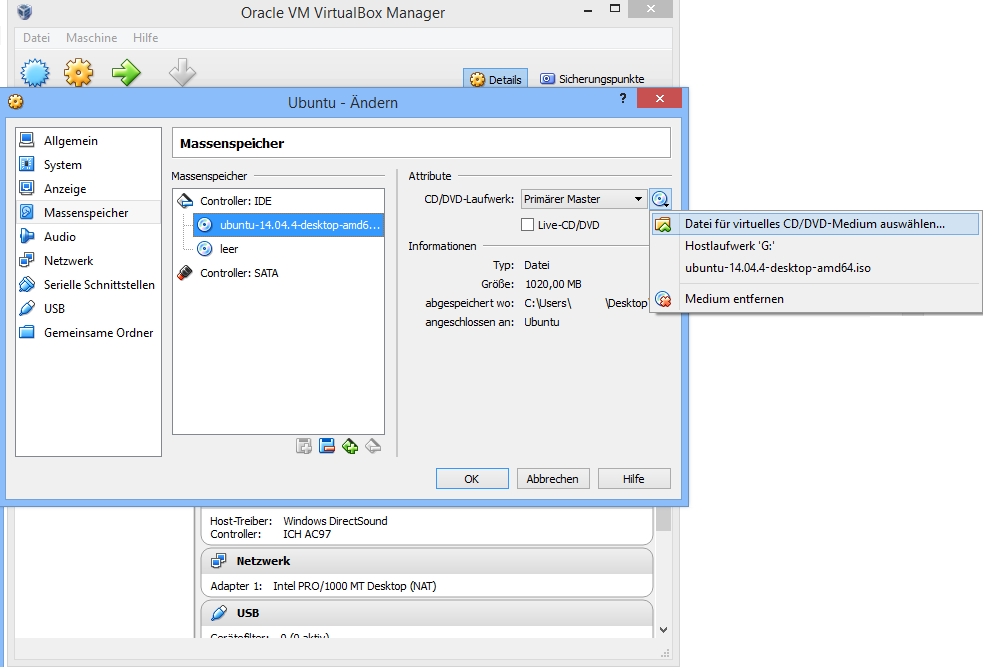

Prepare the Installation PC/USB:
1. Install VirtualBox-4.3.36 and Oracle_VM_VirtualBox_Extension_Pack-4.3.36, produce a new Virtaul Machine (Ubuntu) without virtual hard disk
Installiere VirtualBox-4.3.36 und Oracle_VM_VirtualBox_Extension_Pack-4.3.36, erzeuge eine neue virtuelle Maschine (Ubuntu) ohne virtuelle Festplatte

2. Open Settings -> Storage and click on the CD icon to open ubuntu-14.04.4-desktop-amd64.iso
Oeffne Einstellungen -> Massenspeicher und klicke auf das CD Symbol um ubuntu-14.04.4-desktop-amd64.iso zu oeffnen
3. Start your created VM and open Devices -> USB and choose your first USB stick, Install Ubuntu
Starte deine erstellte VM und oeffne Geraete -> USB-Geraete und waehle deinen ersten USB-Stick aus, installiere Ubuntu
Installation:
4. Connect the first USB stick (Ubuntu) and a USB keyboard to the PS4 and type:
fdisk -l
mount /dev/sdb6 newroot/
exec switch_root /newroot/ /newroot/sbin/init
Verbinde den ersten USB-Stick und eine USB-Tastatur mit deiner PS4 und tippe:
fdisk -l
mount /dev/sdb6 newroot/
exec switch_root /newroot/ /newroot/sbin/init
Info: If your Linux partition is a other device as sdb6, you have to change your text input. Sometimes you have to retype
"exec switch_root /newroot/ /newroot/sbin/init" again. It could take a few minutes to load the distribution, after this, you should see Ubuntu on your PS4.
Info: Falls deine Linux-Partition eine andere als sdb6 ist, musst du deine Texteingabe aendern. Manchmal musst du "exec switch_root /newroot/ /newroot/sbin/init"
nochmal eingeben. Es kann ein paar Minuten dauern, um die Distribution zu laden, danach solltest du Ubuntu auf deriner PS4 sehen.